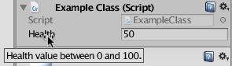

TooltipAttribute
class in UnityEngine
/
Inherits from:PropertyAttribute
/
Implemented in:UnityEngine.CoreModule
Description 描述
Specify a tooltip for a field in the Inspector window.

Tooltip hovering over the class it was added to.
In the following script a Tooltip is added. This provides information to the user about
the range of values for the health variable. The suggested range is provided in the
TooltipAttribute string.
using UnityEngine;
public class Example : MonoBehaviour { [Tooltip("Health value between 0 and 100.")] int health = 0; }
Properties 属性
| tooltip | The tooltip text. |
Constructors
| TooltipAttribute | Specify a tooltip for a field. |
Inherited Members 继承成员
Properties 属性
| order | Optional field to specify the order that multiple DecorationDrawers should be drawn in. |